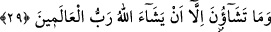

zatları göz önüne alınmış; “doğru yola girmek isteyenler” denirken de “herhangi bir yola
tabi olma” itibariyle böyle söylenmiştir.
“Doğru yola girmek” anlamına gelen “en yestakîm” ifâdesi, “dilemek” anlamına gelen
“şâe” fiilinin mef’ûlüdür. Buna göre âyete şöyle mânâ verilebilir: “Kuşkusuz o Kur’an
içinizde hakkı aramak ve doğru olana yapışmak sûretiyle istikamet yolunu dileyen
kimselere bir öğüttür.”
“Alemîn” kelimesinin içinde “doğru yola girmek isteyenler” de mevcud oldukları
halde dikkatlerin “alemîn”e değil de “doğru yola girmek isteyenlere” çekilmesine,
bedel olarak getirilmesi sebebsiz değildir. Çünkü burada sözü edilen öğütten
yararlanacak olanlar başkaları değil sâdece bunlardır. Adeta öğüt bunlara özeldir,
onlardan başkaları bu öğütten yararlanmazlar ve öğüt almazlar.
29. Âlemlerin Rabbi Allah dilemedikçe siz dileyemezsiniz.
Ey istikamet dileyen kimseler! “Alemlerin Rabbi” bütün yaratıkları cismânî ve rûhânî
rızıklarla yetiştiren mürebbisi, istikameti “dilemedikçe siz dileyemezsiniz.” Bir başka
ifâdeyle; ey istikameti dileyen kimseler! Alemlerin Rabbi herhangi bir vakitte istikameti
sağlayacak dilemeyi dilemedikçe siz onu dileyemezsiniz.
Tefsirimizin başında “ey istikamet dileyenler” şeklinde bir ifâde kullandık. Bunu
“içinizden doğru yola (istikamete) girmek isteyen” cümlesinden çıkardık. Çünkü bu
ifâde bize gösteriyor ki; insanların içinde doğru yola girmek isteyenler olduğu gibi, bunu
yapmak istemeyenler de vardır. Şu halde bu son âyette hitab, o istikameti yâni doğru
yolu dileyenlere olacaktır.
Rivâyete göre Ebû Cehil “içinizden doğru yola girmek isteyene bir öğüttür” ifâdesini
duyunca; “iş bize bırakılmış, dilersek doğru yola gireriz, dilemezsek girmeyiz” dedi.
Bunun üzerine bu son âyet nâzil oldu.
“Allah’ın dilemesi” ifâdesi masdar olup zaman yerine kullanılmıştır. Buna göre âyetin
mânâsı şöyledir: Ey istikamet dileyenler! Siz onu dileyemezsiniz. Sizler istikameti
ancak alemlerin Rabbinin dilemesi gerçekleştiği vakitte dileyebilirsiniz. Şu halde
Allah’ın dilemesi olmadıkça sizin dilemeniz istikameti sağlayamaz. Çünkü isteğe bağlı
dilemek, sonradan olma bir dilemedir. Sonradan olma dilemenin mutlaka bir meydana
getiricisi olmalıdır. Şu halde böyle bir dilemenin meydana gelmesi onu meydana
getirecek varlığın dilemesine bağlıdır. Buradan ortaya çıkıyor ki istikamet yâni doğru
yola girme fiili istikamet iradesine bağlıdır. Bu irade de Allah’ın o iradeyi var etme
isteğine bağlıdır. Şu halde herhangi bir şey bir nesneye dayanıyorsa, o şey de başka bir
şeye dayanıyorsa o zaman birincisi en altta dayanana dayanıyor demektir. Şunu demek
istiyoruz; kulların fiilleri gerek yapılma, gerekse yapılmama açısından Allah Teâlâ’nın